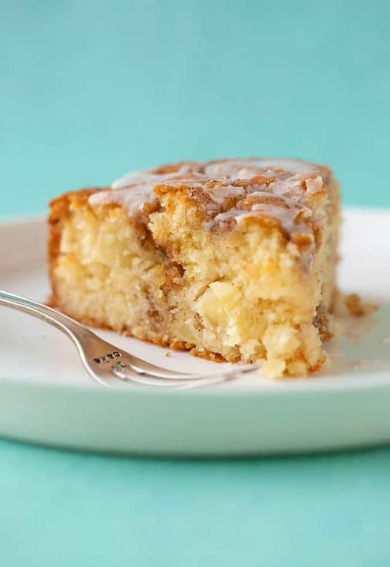

Apple cake

Description
Can we take a moment to talk about the match made in heaven that is apple and cinnamon? This terrifically tender Cinnamon Apple Cake is my new fave.
It’s soft, it’s sweet and it’s jam-packed with fresh, juicy apples. The final touch is a sprinkling of sugary cinnamon and a sweet milk glaze.
Ingredients
- 10 grams (1 and 1/2 cups) plain flour or all purpose flour
- 2 teaspoons baking powder
- 1/2 teaspoon baking soda
- 1/4 teaspoon salt
- 150 grams (3/4 cup) caster sugar or granulated sugar
- 1 cup (approximately 1 large) red apple, peeled and roughly chopped
- 2 large eggs
- 1 teaspoon vanilla extract
- 120 ml (1/2 cup) vegetable oil
- 120 ml (1/2 cup) Greek yogurt
Recipe
- Preheat oven to 180 C (350 F) standard / 160 C (320 F) fan-forced. Grease and line an 8-inch round cake pan with baking or parchment paper.
- In a large mixing bowl, add flour, baking powder, baking soda, salt and sugar. Add chopped apple and stir briefly to combine.
- In a separate bowl, add eggs, vanilla, oil and yoghurt. Whisk briefly just to break up the egg yolks.
- Add wet ingredients to dry ingredients and gently mix with a wooden spoon until combined – but be careful not to over mix. Spoon batter into prepared tin.
- To make cinnamon topping, combine cinnamon, sugar and butter. Mix together until lumpy and wet. Sprinkle over cake batter.
- Bake cake for approximately 30-35 minutes or until a skewer inserted into the middle comes out clean. Transfer cake to a wire rack to cool completely.
- To make the glaze, mix together sugar and 1 tablespoon of milk. Stir until smooth. If the glaze is too thick, add an extra tablespoon of milk. Drizzle glaze all over the cake.